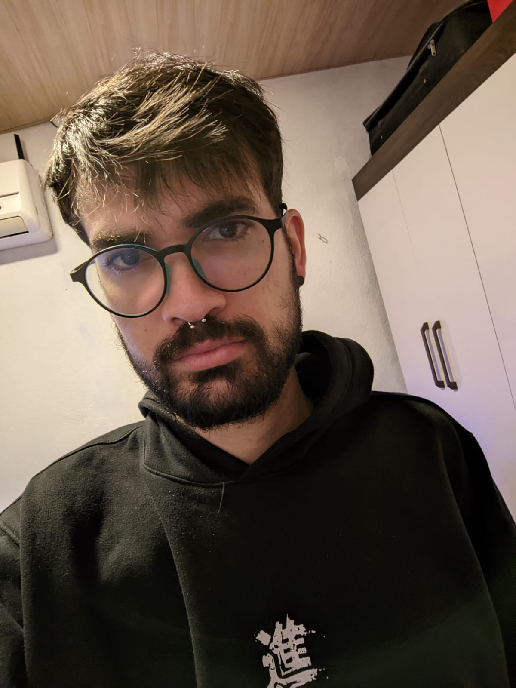

Olá! me chamo Lucas Pires - Cursando Engenharia de Software
Meu nome é Lucas da Silva Pires, tenho 25 anos e sou de Vitória/ES. Desde pequeno, minha paixão sempre foi a tecnologia. Essa paixão não só me acompanhou ao longo dos anos, como também moldou grande parte das minhas escolhas profissionais e acadêmicas.
Saiba Mais!
